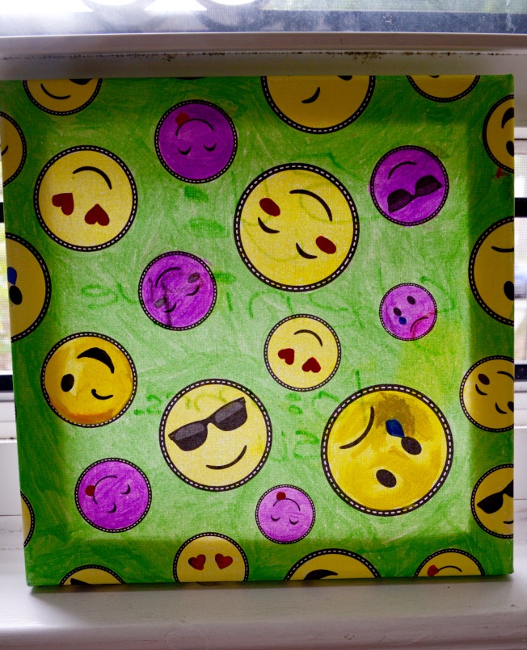

紐約懷舊火車回味老時光
 For more information, click in the following
《生活》紐約懷舊火車 回味老時光
For more information, click in the following
《生活》紐約懷舊火車 回味老時光
- •四面鐘｜中央車站鎮站之寶 一進入大中央總站大廳，最吸睛的就是這大鐘了，大鐘高高的位於大廳正中央，詢問處頂端。 這大鐘是由當時頗有名氣設在康州的塞思湯馬斯（Seth Thomas）鐘表工藝公司製作。
- 具有獨特造型的大鐘，是由四個凸形面組成，每一凸面都鑲有一面鐘，朝向東南西北四方位，形成四面鐘。鐘的盤面是採用高品質珍貴的乳白色貓眼石（亦稱蛋白石）為石材。 底部的設計是柱狀塔型，由金光閃閃的黃銅製造，高高襯托起四面鐘。四面鐘後方則有四盞燈，燈光透過貓眼石，散發出溫柔的光芒照亮大廳，營造出獨特溫暖又高雅的氣氛
紐約中央中站大鐘閱盡人生百態

- 我們四人準時集合，深怕錯過良辰美景。一路上只有我們獨行的車子緩緩延著山路往上爬，寶藍色天空異常平靜地深不可測，是否是黎明前的寧靜呢？ 快至山頂時，天空突起變化，上帝拿起了大畫筆，以不同的筆觸及色彩描繪出不同形狀的雲彩，從溫柔婉約的粉紅，逐漸加深到濃郁醉人的豔紅，朝霞的色彩形狀繼續不斷地變化
- 突然間，一道橙黃色光芒衝破了紅雲，太陽露出耀眼奪目的萬丈光芒，迅速擴大至一個金黃大火球，照亮了山頭，山丘上紅黃交錯的葉子顯露出來，照亮了熊山大橋美麗的橋身，山腳下彎彎曲曲的河流，披上金色的光芒，靜靜地流向大海。
熊山迎日出
 For more information , click in the following
熊山迎日出
For more information , click in the following
熊山迎日出
- 夏姬生母吸毒成癮，生下夏姬後，仍沉迷於毒品，對子女棄之不顧，於是夏姬及一個姊姊二個哥哥，都被兒童福利局認養，四個兄弟姊妹被送往不同的寄養家庭。
- 寄養到收養 夏姬終於有「家」剛開始時夏姬脾氣暴躁，行動怪異，不合群，打人，搶玩具，學習有障礙，很難管教，讓瑪麗亞頭痛不已，曾多次有放棄照顧她的念頭。
- 全家正式收養了夏姬，瑪麗亞視夏姬是上天的賜予，全家感謝及全心的愛著夏姬。性情古怪的夏姬在真摰的愛及包容下，性情漸變，逐漸活潑開朗起來。  For more information , click in the following 《親子》天賜母女緣
天賜母女緣
author = Tsae Su